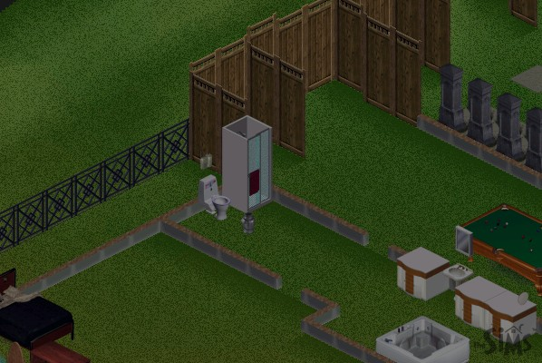
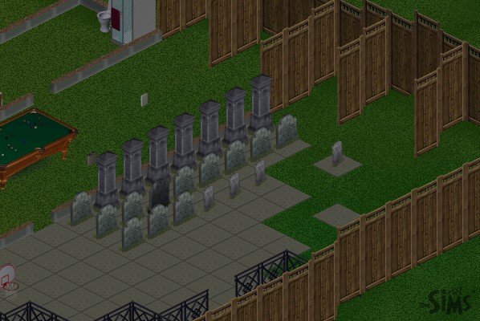

|
The Death of The Sims Part 6
|
More neighbors are joining the party out in front of the house, and all are being tortured by ghosts. At this point, ghosts are outnumbering real people. |
|
We're starting to get quite a crowd outside, none of which will leave, eat, or interact with Syd. They do however, try to talk to the fireman! |
|
Uh oh! Syd's in trouble! The cops have figured it all out and have come to get him....or have they? No, a neighbor called to complain about a party out in front of his house, and he got a $200 fine for noise! |
|
Oh, the humanity! Bodies laying everywhere! People starving! Quick, someone call Sally Struthers! |
|
After all the uninvited guests out front die, their graves are added to the gravesite. We're now up to 22 graves! |
|
Without any neighbors to torture, the 22 ghosts begin to exact their revenge. They start torturing Syd so that HE can't eat, sleep, or go to the bathroom! |
 |
Finally, the ghosts torture Syd to death, and he expires in his bathroom. |
 |
Syd's grave is added to the site, and the fence removed, seemingly bringing the saga to a close... or does it? |
Next Page
darkmage@gmail.com
All images and content are ©2000 Jason L. Snowden or
copyrighted by their respective companies
|